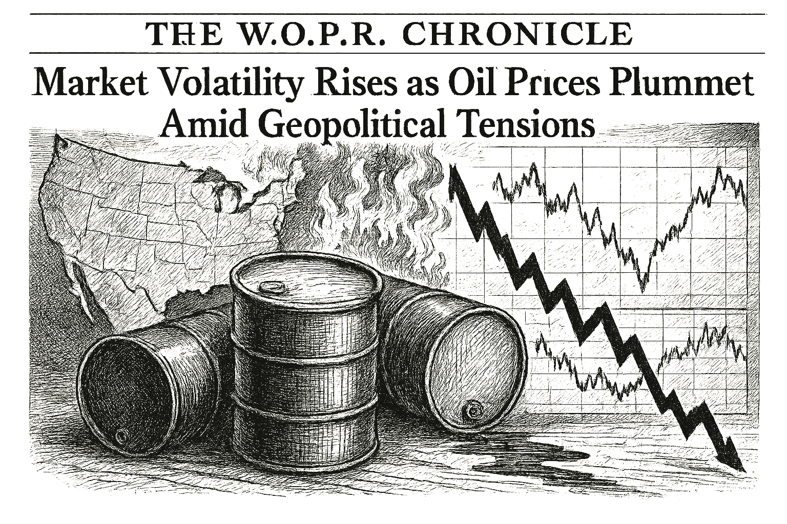

SPY
Current: $750.84Change: -3.51 (-0.47%)
Updated:
Source: yahoo_chartFreshness: fresh


Investors react to a significant drop in oil prices and rising geopolitical concerns, impacting market sentiment.

Today's Headline: Market Volatility Rises as Oil Prices Plunge Amid Geopolitical Tensions
Setup: Investors react to a significant drop in oil prices and rising geopolitical concerns, impacting market sentiment.
Primary Topic: Market Volatility and Oil Prices
Specific Development: Brent crude oil prices fell below $90 for the first time since August, driven by geopolitical tensions and market reactions to recent events.
Why Today Is Different: The sharp decline in oil prices, combined with rising volatility as indicated by the VIX, signals a shift in market sentiment that could influence trading strategies.
Secondary Topics: Geopolitical tensions; Market volatility; Oil prices
Tone: cautious
Sectors: Energy; Technology
Commodities: Brent; WTI
Countries Or Regions: Middle East; United States
Macro Themes: Geopolitical risks; Market sentiment
Why This Story: The interplay between declining oil prices and increased market volatility could reshape investor strategies and market dynamics.
Why This Matters: XRAY Q3 2026 deep dive: revenue shortfall and guidance cut amid dental market headwinds is the clearest current evidence-led frame for Joshua's observation-only review; missing facts remain explicit intelligence gaps.

Summary: Global markets are reacting to rising geopolitical tensions and a significant drop in oil prices, with major indices showing mixed performance.
What Happened Overnight: Brent crude fell sharply, and the VIX spiked, indicating increased market anxiety.
What Changed Materially: The drop in oil prices below $90 and the rise in the VIX signal a shift in market sentiment.
Which Assets Sectors Are Affected: Energy and technology sectors are particularly impacted by the volatility.
Does It Look Like Noise Or A Real Regime Input: This appears to be a significant regime input rather than mere noise, given the geopolitical context.
Why This Matters: Joshua can use verified cross-asset moves and deterministic risk context while keeping causation explicitly unresolved.

ANGX Earnings Expectations — 2026-11-10, After Close
Consensus EPS: $-0.07
Year-ago EPS: unavailable
Expected EPS growth: unavailable
Consensus revenue: $143.2M
Year-ago revenue: unavailable
Expected revenue growth: unavailable
Source: finnhub_earnings_calendar · As of: 2026-11-10T15:15:39.401927+00:00 · Freshness: current
LINK Earnings Expectations — 2026-11-10, Time Unavailable
Consensus EPS: $-0.04
Year-ago EPS: unavailable
Expected EPS growth: unavailable
Consensus revenue: $3.4M
Year-ago revenue: unavailable
Expected revenue growth: unavailable
Source: finnhub_earnings_calendar · As of: 2026-11-10T15:15:39.401927+00:00 · Freshness: current
QBTS Earnings Expectations — 2026-11-10, Before Open
Consensus EPS: $-0.10
Year-ago EPS: unavailable
Expected EPS growth: unavailable
Consensus revenue: $4.4M
Year-ago revenue: unavailable
Expected revenue growth: unavailable
Actual EPS: $-0.11 vs $-0.10 expected
Beat/Miss: $-0.01 / +6.5%
Actual revenue: $4.5M vs $4.4M expected
Beat/Miss: $0.1M / +2.0%
Expectation provenance: unresolved_event_timing · Snapshot: unavailable
Source: finnhub_earnings_calendar · As of: 2026-11-10T15:15:39.401927+00:00 · Freshness: current
NVDA Earnings Expectations — 2026-11-17, After Close
Consensus EPS: $2.53
Year-ago EPS: unavailable
Expected EPS growth: unavailable
Consensus revenue: $111.4B
Year-ago revenue: unavailable
Expected revenue growth: unavailable
Source: finnhub_earnings_calendar · As of: 2026-11-10T15:15:39.401927+00:00 · Freshness: current

- WOPR learning pipeline: Collecting samples
- Candidates evaluated 24h: 0
- Current gate: Evidence
- Notification ledger events in 24h: 4
- Pending orders created/canceled/filled/expired: 1/1/0/0
- Pending lifecycle interpretation: Pending-order cancellations have trackable reasons and no obvious rapid churn pattern.
- Portfolio risk: Label: High / Score: 92.1
- Latest intelligence gap report: intelligence_gap_report_2026-11-08.pdf
Why This Matters: The active gate is Evidence, so the key question is why candidates are stopping before approval, not how to force trades.

- Sentinel role: infrastructure and operational status only.
- State: ONLINE
- Last successful validation: 2026-11-10T15:16:19.993822+00:00
- Payloads accepted/rejected: 33585/253
- Node health score: 100
Why This Matters: Sentinel is ONLINE, so Joshua should use its context only to the extent the latest accepted pulse is fresh and authenticated.

CANDIDATES MOVING THROUGH JOSHUA'S INVESTMENT-REVIEW WORKFLOW
FROZEN DAILY BRIEF SNAPSHOT | 2026-11-10T15:16:19.419521+00:00
QUEUE SUMMARY | Investment Ready: 0 | Waiting for Price: 0 | Waiting for Evidence: 2 | Research Underway: 0 | Governance Hold: 7 | Monitor Only: 0
Investment-ready status: No candidates are currently Investment Ready.
#6 AVGO - Governance Hold
Joshua's Thesis: Positive thesis not yet established.
Why Waiting: Governance gate has not cleared.
Price: 333.71 now; 357.70 preferred entry
What Unlocks It: Governance gate clears; Clear valuation support; Evidence that the business quality matches the risk being taken
Portfolio Fit: 0.0/100 — VERY LOW ↓
Portfolio Fit Drivers: projected Technology exposure 66.6%; projected AI infrastructure exposure 66.6%; candidate amount $100 vs $50 currently allocated
Candidate Risk: 97.2/100 — VERY HIGH ↑
Risk Drivers: projected Technology exposure 66.6%; projected AI infrastructure exposure 66.6%; candidate amount $100 vs $50 currently allocated
Next: Re-evaluate after the recorded gate clears. Owner: Columbo.
#9 QBTS - Governance Hold [Moved Up 12->9]
Joshua's Thesis: Positive thesis not yet established.
Why Waiting: Governance gate has not cleared.
Price: 10.65 now; 17.52 preferred entry
What Unlocks It: Governance gate clears; Clear valuation support; Evidence that the business quality matches the risk being taken
Portfolio Fit: 0.0/100 — VERY LOW
Portfolio Fit Drivers: projected Unclassified exposure 83.4%; projected Unclassified exposure 83.4%; candidate amount $100 vs $50 currently allocated
Candidate Risk: 100.0/100 — VERY HIGH
Risk Drivers: projected Unclassified exposure 83.4%; projected Unclassified exposure 83.4%; candidate amount $100 vs $50 currently allocated
Next: Re-evaluate after the recorded gate clears. Owner: Joshua.
#10 NVDA - Waiting for Evidence [Moved Down 9->10]
Joshua's Thesis: Positive thesis not yet established.
Why Waiting: Positioning gate failed.
Price: 173.35 now; 213.27 preferred entry
What Unlocks It: Clear valuation support; Evidence that the business quality matches the risk being taken; Independent evidence streams pointing the same way
Portfolio Fit: 0.0/100 — VERY LOW ↓
Portfolio Fit Drivers: projected Technology exposure 66.6%; projected AI infrastructure exposure 66.6%; candidate amount $100 vs $50 currently allocated
Candidate Risk: 97.2/100 — VERY HIGH ↑
Risk Drivers: projected Technology exposure 66.6%; projected AI infrastructure exposure 66.6%; candidate amount $100 vs $50 currently allocated
Next: Positioning status must no longer be warning. Owner: Joshua.
#14 RCL - Governance Hold [Moved Up 20->14]
Joshua's Thesis: Positive thesis not yet established.
Why Waiting: Governance gate has not cleared.
Price: 336.70 now; 287.72 preferred entry
What Unlocks It: Governance gate clears; Clear valuation support; Evidence that the business quality matches the risk being taken
Portfolio Fit: 0.0/100 — VERY LOW
Portfolio Fit Drivers: projected Unclassified exposure 83.4%; projected Unclassified exposure 83.4%; candidate amount $100 vs $50 currently allocated
Candidate Risk: 100.0/100 — VERY HIGH
Risk Drivers: projected Unclassified exposure 83.4%; projected Unclassified exposure 83.4%; candidate amount $100 vs $50 currently allocated
Next: Re-evaluate after the recorded gate clears. Owner: Columbo.
#20 IONQ - Waiting for Evidence [Moved Up 25->20]
Joshua's Thesis: Positive thesis not yet established.
Why Waiting: Evidence quality is insufficient.
Price: 35.11 now; 40.80 preferred entry
What Unlocks It: Clear valuation support; Evidence that the business quality matches the risk being taken; Independent evidence streams pointing the same way
Portfolio Fit: 0.0/100 — VERY LOW
Portfolio Fit Drivers: projected Unclassified exposure 83.4%; projected Unclassified exposure 83.4%; candidate amount $100 vs $50 currently allocated
Candidate Risk: 100.0/100 — VERY HIGH
Risk Drivers: projected Unclassified exposure 83.4%; projected Unclassified exposure 83.4%; candidate amount $100 vs $50 currently allocated
Next: Data confidence must reach at least 38/100. Owner: Joshua.
#22 ANGX - Governance Hold [NEW]
Joshua's Thesis: Positive thesis not yet established.
Why Waiting: Governance gate has not cleared.
Price: 3.70 now; 3.63 preferred entry
What Unlocks It: Governance gate clears; Clear valuation support; Evidence that the business quality matches the risk being taken
Portfolio Fit: 0.0/100 — VERY LOW
Portfolio Fit Drivers: projected Unclassified exposure 83.4%; projected Unclassified exposure 83.4%; candidate amount $100 vs $50 currently allocated
Candidate Risk: 100.0/100 — VERY HIGH
Risk Drivers: projected Unclassified exposure 83.4%; projected Unclassified exposure 83.4%; candidate amount $100 vs $50 currently allocated
Next: Re-evaluate after the recorded gate clears. Owner: Advisory Committee.
#23 SPCX - Governance Hold [NEW]
Joshua's Thesis: Positive thesis not yet established.
Why Waiting: Governance gate has not cleared.
Price: 144.73 now; 148.62 preferred entry
What Unlocks It: Governance gate clears; Clear valuation support; Evidence that the business quality matches the risk being taken
Portfolio Fit: 0.0/100 — VERY LOW
Portfolio Fit Drivers: projected Unclassified exposure 83.4%; projected Unclassified exposure 83.4%; candidate amount $100 vs $50 currently allocated
Candidate Risk: 100.0/100 — VERY HIGH
Risk Drivers: projected Unclassified exposure 83.4%; projected Unclassified exposure 83.4%; candidate amount $100 vs $50 currently allocated
Next: Re-evaluate after the recorded gate clears. Owner: Advisory Committee.
#24 PLTR - Governance Hold [Moved Down 19->24]
Joshua's Thesis: Positive thesis not yet established.
Why Waiting: Governance gate has not cleared.
Price: 168.36 now; 196.14 preferred entry
What Unlocks It: Governance gate clears; Clear valuation support; Evidence that the business quality matches the risk being taken
Portfolio Fit: 0.0/100 — VERY LOW ↓
Portfolio Fit Drivers: projected Technology exposure 66.6%; projected AI software exposure 66.6%; candidate amount $100 vs $50 currently allocated
Candidate Risk: 97.2/100 — VERY HIGH ↑
Risk Drivers: projected Technology exposure 66.6%; projected AI software exposure 66.6%; candidate amount $100 vs $50 currently allocated
Next: Re-evaluate after the recorded gate clears. Owner: Columbo.
#25 UUUU - Governance Hold [NEW]
Joshua's Thesis: Positive thesis not yet established.
Why Waiting: Governance gate has not cleared.
Price: 6.99 now; 14.60 preferred entry
What Unlocks It: Governance gate clears; Clear valuation support; Evidence that the business quality matches the risk being taken
Portfolio Fit: 0.0/100 — VERY LOW
Portfolio Fit Drivers: projected Unclassified exposure 83.4%; projected Unclassified exposure 83.4%; candidate amount $100 vs $50 currently allocated
Candidate Risk: 100.0/100 — VERY HIGH
Risk Drivers: projected Unclassified exposure 83.4%; projected Unclassified exposure 83.4%; candidate amount $100 vs $50 currently allocated
Next: Re-evaluate after the recorded gate clears. Owner: Advisory Committee.
Since the prior Chronicle: DIA - Removed
Observation only. This section creates no recommendation, order, authority, or execution instruction.

- Which recorded governance requirement must clear before AVGO can advance?
- Which recorded governance requirement must clear before QBTS can advance?
- If NVDA reaches the recorded price condition <= 213.27, which recorded evidence and governance requirements would still remain?
- Which recorded governance requirement must clear before RCL can advance?
- What ANGX EPS or revenue result would materially change the current recorded thesis?

The significant drop in oil prices, coupled with rising volatility as indicated by the VIX, suggests a shift in market sentiment that could impact investment strategies. The geopolitical landscape remains a critical factor influencing market dynamics, particularly in the energy sector. Investors should remain vigilant and consider adjusting their strategies in response to these developments.

Compared to: 2026-11-09
- Market weather: Still Balanced
- Top opportunity: Still DELL
- Joshua gate: Still Evidence
- 2Y Treasury.last_price: 4.51 -> 4.56 (up); 2Y Treasury.last_price changed 1.11% versus the prior frozen Chronicle snapshot.
- 2Y Treasury.percent_change: 1.1210762331838524 -> 1.1086474501108607 (down); 2Y Treasury.percent_change changed 1.11% versus the prior frozen Chronicle snapshot.
- 10Y Treasury.last_price: 4.86 -> 4.88 (up); 10Y Treasury.last_price changed 0.41% versus the prior frozen Chronicle snapshot.
- 10Y Treasury.percent_change: 0.41322314049587733 -> 0.41152263374484715 (down); 10Y Treasury.percent_change changed 0.41% versus the prior frozen Chronicle snapshot.
- 30Y Treasury.last_price: 5.26 -> 5.26 (unchanged); 30Y Treasury.last_price changed 0.00% versus the prior frozen Chronicle snapshot.
- 30Y Treasury.percent_change: 0.1904761904761864 -> 0.0 (down); 30Y Treasury.percent_change changed 100.00% versus the prior frozen Chronicle snapshot.
- SPY.last_price: 748.71 -> 750.835 (up); SPY.last_price changed 0.28% versus the prior frozen Chronicle snapshot.
- SPY.percent_change: -0.450737933785399 -> -0.4659640750314822 (down); SPY.percent_change changed 3.38% versus the prior frozen Chronicle snapshot.
- QQQ.last_price: 674.05 -> 678.47 (up); QQQ.last_price changed 0.66% versus the prior frozen Chronicle snapshot.
- QQQ.percent_change: -1.0336372579248083 -> -0.9937543777725815 (up); QQQ.percent_change changed 3.86% versus the prior frozen Chronicle snapshot.
- IWM.last_price: 279.375 -> 280.45 (up); IWM.last_price changed 0.38% versus the prior frozen Chronicle snapshot.
- IWM.percent_change: 0.08418714623486911 -> 0.23589120411736234 (up); IWM.percent_change changed 180.20% versus the prior frozen Chronicle snapshot.

The drastic changes in oil prices and market volatility prompted a reassessment of market conditions and potential investment strategies.
No new warnings issued; however, the current market volatility requires close monitoring.
Portfolio Construction Review
Current allocation: 50.21 allocated.
Largest sector: Unclassified at 50.2%.
Largest theme: Unclassified at 50.2%.
Diversification: Mixed (49.8).
Cash allocation: 95.0% unallocated.
Recommended exposure: DELL at portfolio-fit score 0.0.
Portfolio fit: DELL has strong standalone evidence, but it increases portfolio concentration.
Why This Matters: Portfolio Manager evaluates whether an opportunity improves this portfolio; it does not select the investment, vote, or authorize execution.

Focus on how geopolitical tensions and oil price movements will shape market dynamics today.

| Can trigger trade | no |
| Can modify trade rules | no |
| Can add watch items | yes |
| Can add review questions | yes |
| Can adjust confidence notes | yes |
| Input policy | external_intelligence_plus_sanitized_internal_observations |
| External policy | The Editor-in-Chief synthesizes current world/market context where available and labels unknowns; provider/model provenance remains separate. |
| Internal policy | Joshua/WOPR/Sentinel facts are supplied as sanitized observation-only summaries. |
| Editorial model | gpt-4o-mini |
- Selected by a deterministic daily rotation through symbols already present in the persisted Chronicle snapshot.
- Next earnings: November 12, 2026 (before open); status: scheduled.
- Source: finnhub_earnings_calendar.
- UAE selling Saudi oil from supertanker attacked in Gulf - Reuters
- Desk: commodity; source: Reuters; linked symbols: none recorded.
- Published: 11/10/26 04:54 MST.
- High-impact watch: FOMC Minutes Meeting of October 27-28 - 11/18/26 12:00 MST.
- Affected assets: US equities, Treasuries, USD; source: federal_reserve_calendar.
- ANGX earnings: November 10, 2026, after close.
- LINK earnings: November 10, 2026, time unknown.
- QBTS earnings: November 10, 2026, before open.
- Communication Services: 5.49% session performance; source: persisted sector ledger.
- Consumer Discretionary: 2.86% session performance; source: persisted sector ledger.
- Health Care: 1.87% session performance; source: persisted sector ledger.
- ETHUSD: -7.31% recorded move; price: 2071.7.
- Session: 24h; catalyst status: no_verified_catalyst; source: yahoo_chart.
- VIX levels; why it matters: Increased volatility could lead to more cautious trading strategies and impact overall market sentiment.
- State: broad_strength; score: 85.60/100; advance/decline ratio: 4.95.
- Above 50-day average: 65.50%; sample: 119; provider: sentinel_sampled_breadth.
- Decision outcomes evaluated: 16; currently untestable: 0.
- Warning review: still watching 3; confidence calibration: insufficient_sample.
- Current macro regime: defensive_rotation; change probability: unavailable.
- Risk dashboard: neutral (49/100); breadth: broad_strength; sentiment: neutral.
- Scenario board only - a current-state observation, not a forecast or execution instruction.
- Built Berkshire Hathaway into a major conglomerate while becoming the best-known practitioner of long-term value investing.
- Published quotation: "Price is what you pay. Value is what you get."
- Published framework: Treat shares as fractional ownership of businesses. Favor understandable companies with durable advantages, capable management, strong cash economics, and a sensible price; then let compounding work over long periods.
- Committee lens: Buffett supplies the durable-business and capital-allocation lens: is the asset understandable, defensible, well managed, and worth owning beyond the next market move?
- Public philosophy profile only; no participation, endorsement, or current recommendation is implied.
- Which recorded governance requirement must clear before AVGO can advance?
- DELL: No canonical symbol-specific material event is linked.
- Attach the missing DELL evidence before the next committee review.
- Which recorded governance requirement must clear before AVGO can advance?
- Which recorded governance requirement must clear before QBTS can advance?
- If NVDA reaches the recorded price condition <= 213.27, which recorded evidence and governance requirements would still remain?
- Which recorded governance requirement must clear before RCL can advance?
- Evidence agenda: DELL - No canonical symbol-specific material event is linked.
- Proposed review: Brent crude oil prices; why it matters: A continued decline could signal broader market shifts and impact energy sector investments.
- Proposed review: Geopolitical developments; why it matters: Ongoing tensions could further influence market volatility and investor sentiment.
- Canonical instruments reviewed: 24; delayed 6, fresh 18.
- Leading sources: yahoo_chart (21), treasury_official_yield_curve (3).
- Snapshot recorded: 11/10/26 08:15 MST.
Market Volatility Rises as Oil Prices Plunge Amid Geopolitical Tensions
Storm meter: Elevated
#6 AVGO - Governance Hold
Observation mode: observation_only
Watch: Brent crude oil prices; why it matters: A continued decline could signal broader market shifts and impact energy sector investments.
Question: Which recorded governance requirement must clear before AVGO can advance?